You can purchase the greatest, most impressive, most expensive DVD home theater system in the world, but, without a DVD to watch, it's just an expensive doorstop. The same thing's true with your computer—hardware's nice, but it's nothing without software.
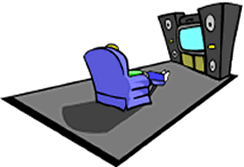
In this lesson, we'll look at the two types of software: the kind that "does things for your computer"—called the operating system, and the kind that "does things for you"—called application programs. We'll also take a look at how computer programs work "under the hood."
Here are the topics we'll cover:
- computer programs
- systems software and applications software
- the basic components that make up your processor or CPU
- the registers that hold information for the CPU to process
- the four steps of the machine cycle that control how your CPU works
Let's start by looking at how you run and install programs.
Running and Installing Programs
What is a computer program? It's simply "a set of instructions that tells the computer what to do." You can think of a program as an "automated" recipe for accomplishing a particular task.
Microsoft Word is a program, as is Microsoft Excel. Quicken, Doom, iTunes, and your Web Browser are all programs. Even Windows XP is a program, (or, technically, a collection of programs.)
Running Programs
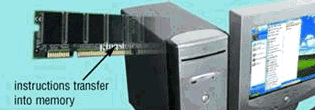
To watch the latest DVD release that you've rented at Blockbuster, you have to load it into your DVD player, and press play. Software is very similar.You play a DVD, but you run or execute a program. To run a program, you transfer it from your hard disk, or over the network, and load it into memory. Once the program is loaded, you tell the CPU where the instructions start, and your computer takes over from there.
Installing Programs
There is one big difference between running a program and playing a DVD. Your DVD player works directly from the disc you rent, loading only as much of the movie as is needed into memory at any one time.
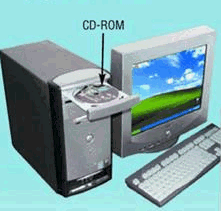
Since many computer programs are delivered on CDs or DVDs, you might think that they'd work the same way, but usually they don't. Instead of running your program directly from the CD, you almost always copy it first to your computer's hard disk; then, when you want to run the program, you'll load it from the hard disk instead.This is called installing the software. There are two reasons why software is usually installed to a hard disk, instead of being run directly from a CD:
- First, hard-disks are much much faster than CDs, so programs are much more responsive when run from a hard-disk.
- Second, most of us customize the programs that we run, changing the settings to reflect the way we want to work. Having the program installed on the hard-drive, which is a read-write medium, instead of on a read-only CD, makes that process easier.
Installation also performs other tasks, such as creating desktop icons and menu entries, and performing product activation. One of the down-sides of program installation, is that it can make it very hard to move the location of a program on the hard disk, if you decide to reorganize your computer, or if you want to move the program to a new computer. I, personally, prefer programs that don't require a complex installation step, and that keep all of their files in a single folder.
Talking to your Programs
With your DVD player, you "talk to your movie" by using the play and pause buttons on your remote control. How do you talk to your computer programs? Exactly how do you tell your computer that you want to run the latest Star Trek game?
 You could try just talking to your computer like Scotty did when
he first met a Macintosh in Star Trek 4 ("Hello Computer!"),
but it's unlikely to work for a few years yet. Just like your
DVD remote control allows you to communicate with your DVD player,
your computer has a user interface that allows you to send
commands to your software.
You could try just talking to your computer like Scotty did when
he first met a Macintosh in Star Trek 4 ("Hello Computer!"),
but it's unlikely to work for a few years yet. Just like your
DVD remote control allows you to communicate with your DVD player,
your computer has a user interface that allows you to send
commands to your software.
With a graphical user interface, or GUI, like Windows XP or Mac OS X, you interact with your programs in the form of small graphical images, called icons, and other features such as pull-down menus. To run a program with a GUI, for instance, you point to it using the mouse pointer, and double-click the mouse button.
 This is sometimes called the WIMP interface, for
Window, Icon, Mouse, and Pointer; it's mostly called that by
old gray-headed computer folk, like me, who remember when we
had to talk to our computers using nothing but ones and zeros.
Of course, when things got tough and supplies ran low,
we skipped the zeros.
This is sometimes called the WIMP interface, for
Window, Icon, Mouse, and Pointer; it's mostly called that by
old gray-headed computer folk, like me, who remember when we
had to talk to our computers using nothing but ones and zeros.
Of course, when things got tough and supplies ran low,
we skipped the zeros.
The GUI is also responsible for controlling the different ways you'll enter data, providing input widgets such as text fields, text areas, sliders and buttons, and for controlling the display of information, translating things like the plain text code that make up a Web page into the printed type and graphics that you see on the page in front of you.
Most modern operating systems also have a command-line interface, where you "talk" to your computer using simple English-like (sometimes) commands. The command-line often allows you to use your computer more efficiently, but it's not as easy to remember or to learn. In this class, you'll complete some lab assignments using the command line.
If you've never encountered the command-line before, and think that it's a relic of some bygone age, you might want to read Neal Stephenson's essay, In the Beginning was the Command Line for a different perspective.
Computer Software
 There are two general categories of computer programs. The first
kind of program we call system software. System software
is the software that "runs" your computer. In the old 1970s
Sci-fi movie TRON, systems software was personified by David Warner,
the notorious Master Control Program, that controlled all access
to memory and hardware.
There are two general categories of computer programs. The first
kind of program we call system software. System software
is the software that "runs" your computer. In the old 1970s
Sci-fi movie TRON, systems software was personified by David Warner,
the notorious Master Control Program, that controlled all access
to memory and hardware.
Your computer really does have a master control program, called the operating system, and the operating system really does control all access to your hardware. Your hard disk, for instance, is made up of concentric magnetic recording areas called tracks and sectors. Most of us, however, never deal with tracks and sectors directly. Instead, our operating system allows us to "pretend" that our hard disk contains files and folders.
You don't load and run the operating system in the same way you do other programs. Instead, the operating system loads automatically when your computer first starts, and continues running, (in the "background"), as long as your computer is turned on.
Application Software
When you hear the term software, you probably automatically think of application software, programs that perform a specific job—software that does something for you, rather than software that does something for your computer.
There are different application programs for every different kind of job, industry, business, and hobby you can imagine. You can purchase application software at stores like Fry's or Micro Center just like buying cornflakes down at Stater Brothers.
This kind of "pre-packaged" software is called shrink-wrap or horizontal-market software, so-called because your local dentist probably uses the same kind of software as that used by General Motors; it's not specific to one kind of business. Shrink-wrap software includes things like word processors, spreadsheets, database software, and presentation software.
You can also have application software custom made to meet the exact needs of your business. This might seem exotic, kind of like having custom-made shoes or shirts, but it's really very common; it's more like ordering dinner in a restaurant. Most applications software, in fact, is custom made, or vertical-market software.
I should also mention another, common catagory of software, that may be even more common: embedded software. Embedded software is code that runs "behind the scenes", kind of like the operating system, on your mobile phone, your TV tuner, your music player, your automobile and maybe even your toaster. And with new platforms like the iPhone and Google's Android, this market will only get bigger.
Computer Programmers
Shrink-wrap software, custom software, applications programs, and operating systems; all of these are created by computer programmers. Programmer is the general purpose name we give to anyone who develops applications or system software.
Of course, that's a little like using the term scientist to describe a wide variety of different jobs, and so the computing professions have developed more specific terms. You may hear programmers called software developers, system analysts, software architects, software engineers, magicians, code monkeys, or digital gurus.
In the end, though, a software developer is really like an author or songwriter; the programmer produces a tangible document, (called the program's source code), which contains instructions that the computer is able to follow. (For a really simple example of source code, just choose View Source from your Web browser's menu, and you'll see the instructions the Web programmer (me in this case), wrote to create this Web page.)
In this class, you'll learn to write computer programs (source code) using the Java programming language. Once you've written your programs, you'll use different software tools, such as those found in the Java Development Kit and those supplied as part of the Eclipse IDE (Integrated Development Environment), to compile your source code into a special kind of machine language known as bytecode which can be understood or "played" by an ideal computer known as the Java Virtual Machine or JVM. When you want to run your program, you'll start up the JVM and it will convert your program into the native machine language which will be executed by your computer's hardware CPU.
We'll turn to writing Java programs shortly, but let's start out by seeing how the CPU works!
How Programs Work
The Central Processing Unit, also known as the CPU or simply the processor, is the "brains" inside your computer. The CPU interprets and carries out the basic instructions that operate the computer.
We can divide the CPU itself into two main subsystems:
- The Control Unit coordinates all of the operations of the CPU. When the CPU needs to "talk" to memory, for instance, the CU issues the commands to retrieve or store the necessary bytes or instructions.
- When it comes to actual calculation or decision making, however, the CU turns that over to the Arithmetic-Logic Unit or ALU. All math, comparison, or logical operations are performed by the ALU.
When you run an application program, like Excel, the CPU doesn't deal with the entire program at once. Instead, it processes each instruction or piece of data sequentially. When you start Excel, the program is loaded into memory, but the instructions and data are fed to the CPU one piece at a time.
Even though the CPU and memory are the main players in the computing game, they don't work alone: input devices are necessary to capture data for processing by the CPU, and output devices are necessary if you want to see the information thatresults. Finally, all three of these components—instructions, data, and output—are written to, and read from storage devices during the processing cycle.
Registers
At the beginning of this lesson, I said that programs were instructions, stored in memory, that are executed or run by the CPU. That's really only partly true. The CPU can't actually do anything with instructions or data while it is stored in memory. Instead, it has to fetch the instruction and place it in a register, before it can get "worked on".
A register is just a temporary, high-speed storage area, located on the CPU, that holds data and instructions while processing occurs. Different processors have different names, sizes, and numbers of registers, but all processors use registers to:
- store the address of the next instruction to be executed
- store the instruction itself while the it is being decoded
- store the data that the ALU uses while processing
- store the results of the ALU's calculations
To see how this works, we'll turn back to our old friend Debug, and take a look at the PC's registers, just like we were using a microscope.
Viewing Registers
To view the registers on your PC, start Debug and then type
the r, (for registers) command. (Remember that
you can start Debug just by opening a Command window and
then typing the word debug followed by the Enter key.)
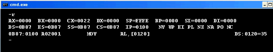
The debug Registers screen shows you three lines of information:
- line one contains the general registers
- line two contains information about the segments, instruction and flags in use
- line three contains information about the next instruction
Let's look at each of these.
General Registers
Line one contains the general registers. These are
registers used for arithmetic and comparisons. Each one can
hold a 16-bit value.
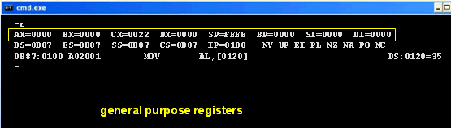
Some of the general registers have a specific job, in addition to their work as general registers. For instance the CX or Count register is used whenever the CPU needs to measure the number of bytes to read or write.
Specialized Registers
Line two contains three groups of specialized registers. The first four
registers are called the segment registers. These are
used to calculate addresses for code and data as your program runs.
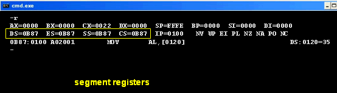
In the middle is the instruction pointer or IP
register. This is used to store the address of the next
instruction to be executed by the CPU. Understanding the IP is
the key to understanding
how programs are executed by the CPU. All makes and models of CPU have an
instruction pointer, even if the number and types of their other
registers differ. (Only Intel CPUs have segment registers,
for instance).
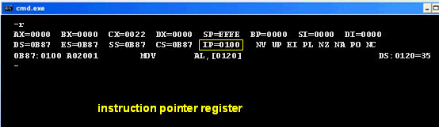
At the far right is the contents of the flags register. The
flags register is used by programs to control the results of
comparisons and access to memory.
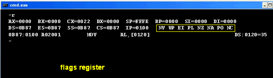
The Current Instruction
The third line of the display provides some short-hand
information about the next instruction that the CPU
will execute.
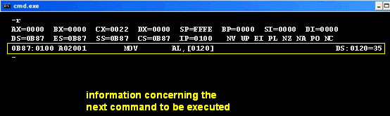
The numbers on the left-hand side represent the address where the next command is located. This address is composed of the contents of the CS (Code Segment) register and the IP (Instruction Pointer) register.
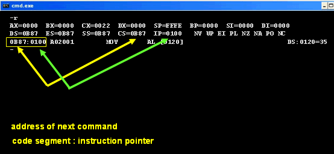
Following the address you'll find the complete machine
language instruction that will be executed next.
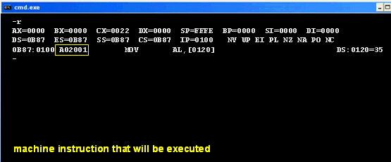
To your processor, this instruction will make perfect sense, but for we non-mechanical humans, Debug shows us the same instruction using a mnemonic form of machine language called assembly language.
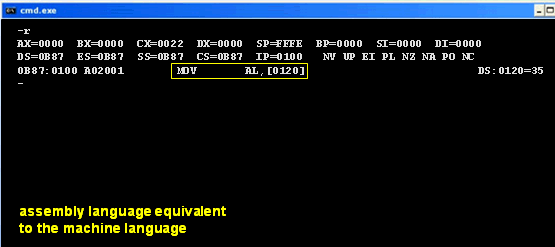
The assembly language instruction shown here says to copy, (or MOV) the value stored in address 120 into the lower half of the AX register.
Finally, the right-hand side of the third line shows the memory
address for any data that is affected by the instruction.
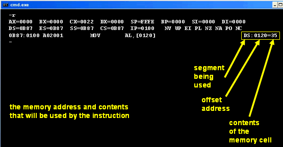
In this case, the address is the combination of the DS (Data Segment) register and the offset 120, and the current value stored at that address is 35 hex.
The Machine Cycle
In some ways, your CPU is really a very simple machine—you plug
it in, and it starts "crunching" data. While the actual
instructions that can be carried out by the CPU may change from
processor to processor, the internal workings of all CPUs are
remarkably similar, consisting of four basic operations. We
call these four operations the machine cycle.

The machine cycle begins by retrieving a machine language
instruction from memory. What instruction? The instruction
located at the address contained in the IP or Instruction Pointer
register. Once the instruction is retrieved, or fetched,
the instruction pointer is automatically ratcheted forward to
point to the next instruction in memory.
Once the instruction has moved from memory over to the CPU's Control Unit, the CU examines it to see what kind of instruction it is. In the last slide you saw a picture of a machine language instruction: A02001, an instruction that says to copy a value from address 0120 into the AL register. When the CU sees the A0, it then treats the next instruction as an address and goes and fetches the data that's required. This part of the cycle is called decoding the instruction.
Ultimately, all programs involve arithmetic, logic, or comparisons at some point, and when one of those instructions arrive, the CU hands off the code to the ALU, which executes the instruction.
Finally, once the ALU calculates a value, that value is normally stored back into memory. In the picture shown here, it looks like the ALU is responsible for writing the results back to memory, but that's not really correct. The Control Unit handles all reading and writing from memory.
Now let's look at how the machine cycle gets started.
Following the Code
Start Debug, and then type -d FFFF:0000. If that looks familiar, it should! It's almost the same instruction that we used in the previous lesson to view your computer's BIOS revision date.
The only difference is that then, we looked at address
FFFF:0005. The value at FFFF:0000 is special,
because it is the address that contains the first
instruction that is fetched and executed on every PC in the
world. We say that this address is hardwired into
the CPU.
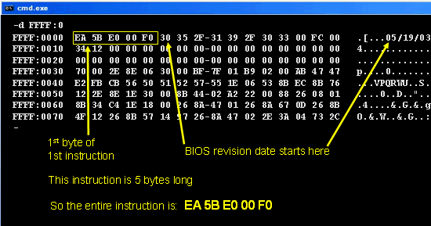
Since the BIOS date starts at the sixth byte, the first instruction executed by your CPU is EA 5B E0 00 F0, and I'm sure you all know exactly what that means.
No?
Me neither. To make sense of the code, we'll have to decode it, just like the CPU does. To decode the instruction for our purposes, we can use debug's unassemble command, which turns machine language into (sort of) human-readable assembly language.
Type in -u FFFF:0000 and press Enter, and you'll see that
the first instruction is JMP F000:E05B.
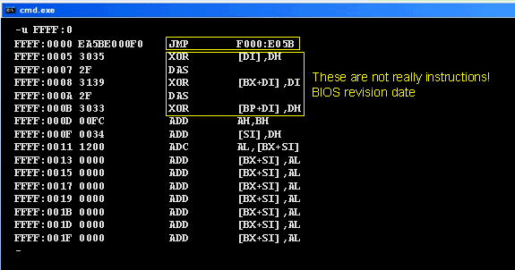
This instruction just means to load the address F000:E05B into the IP register, and then go and fetch the instruction at that location. This process continues, relentlessly, instruction after instruction, until you turn off the power to your computer.
There's one last, very important thing that you should notice about this picture. Do you see the assembly language instructions following the JMP command? As the note says, those are not really instructions. The assembly language that you see printed out is the code that would be produced if we treated the BIOS date as instructions.
"Well", I'm sure you're saying, "can't the computer tell which parts are instructions and which parts are data? Why does it get confused?"
That's a really good question, and that's the main point of this lesson and the last:
Bits is bits.
Most of the time, when this happens, your computer will "crash" almost immediately, since the instructions won't make any sense. Sometimes, though, a clever hacker may craft a specially prepared piece of data, and take advantage of a programming error to get the CPU to execute the data and take over the computer. This kind of vulnerability is known as a buffer overflow.
Coming Up Next...
That's it for the CPU and Debug; use the -q command to quit.
In the next section, let's turn back in time, and learn about how computer programming got started. You'll also meet a few of the programming languages that your parents studied when they were your age.